Child themes
Sixteen child themes live in child-themes/, all with WPWiseBones as the parent:
twelve industry themes for real estate, construction and design firms, and four brand themes.
The library
Twelve industry themes are built on one shared framework rather than each carrying its own front
page. Every one is a handful of files — style.css (header and brand tokens),
theme.json, a three-line front-page.php, a screenshot.png and an
industry-config.php that holds the copy, the section order and the starter site. The parent
renders the sections; the WiseBones Industry Kit plugin supplies the content types,
lead forms, schema markup and the one-click starter site. Samples in the screenshots are marked
Sample and are only ever shown to the site owner.
Real estate
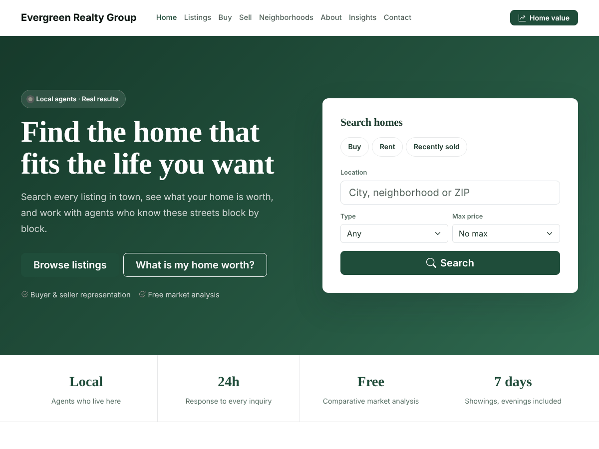
WiseBones Residential
Residential real estate agent and brokerage.
RealEstateAgent · lead form: valuation
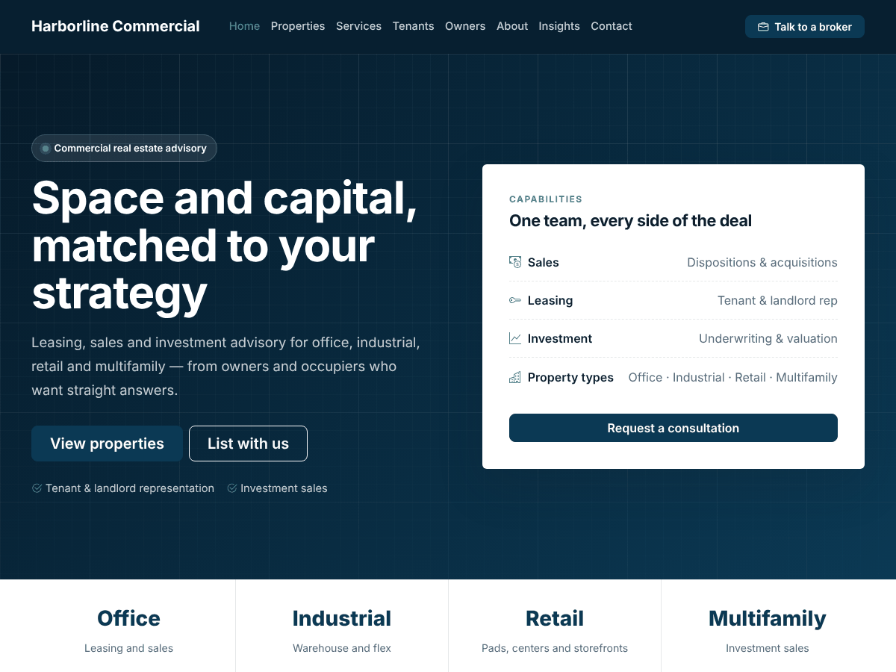
WiseBones Commercial
Commercial real estate and investment brokerage.
RealEstateAgent · lead form: contact
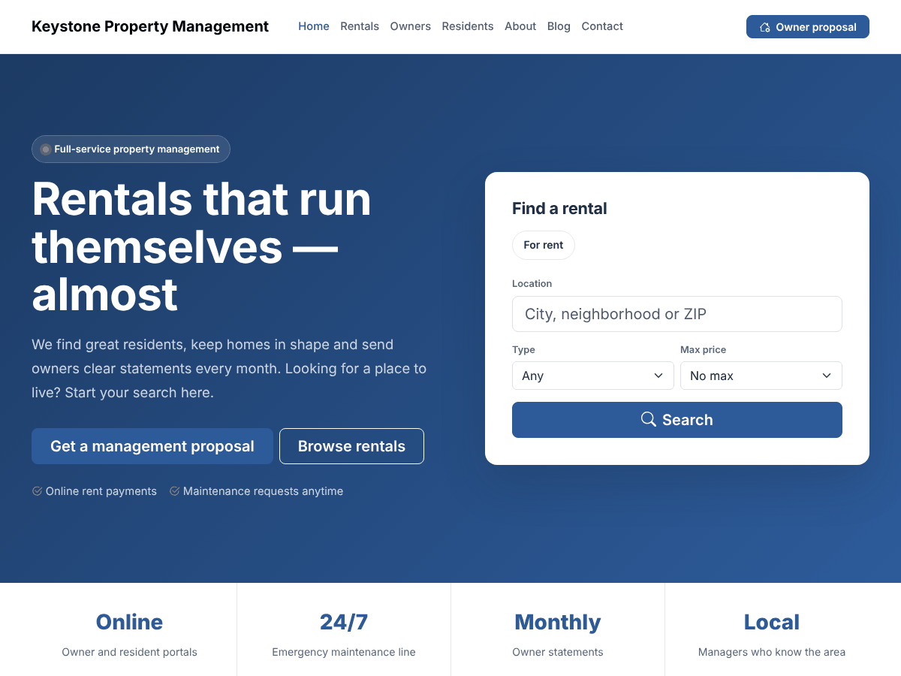
WiseBones Property Management
Property management.
ProfessionalService · lead form: owner
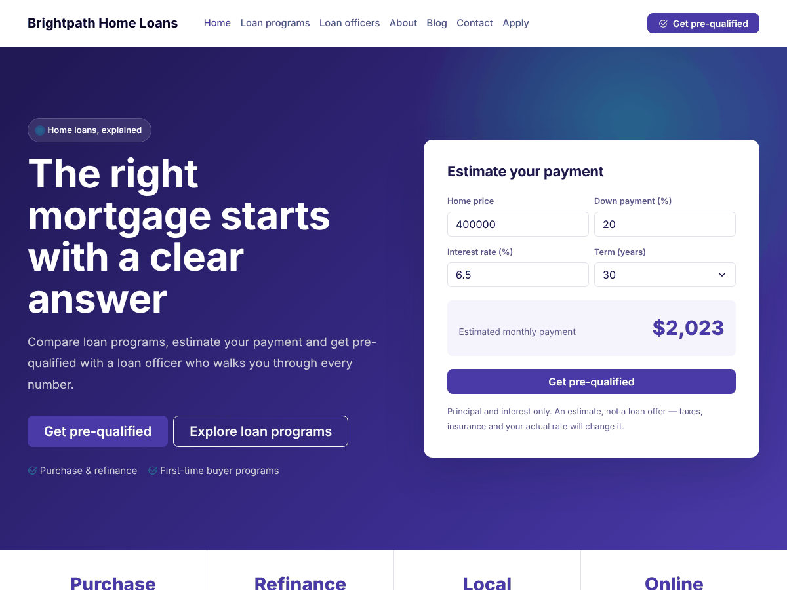
WiseBones Mortgage
Mortgage broker and lender.
FinancialService · lead form: prequal
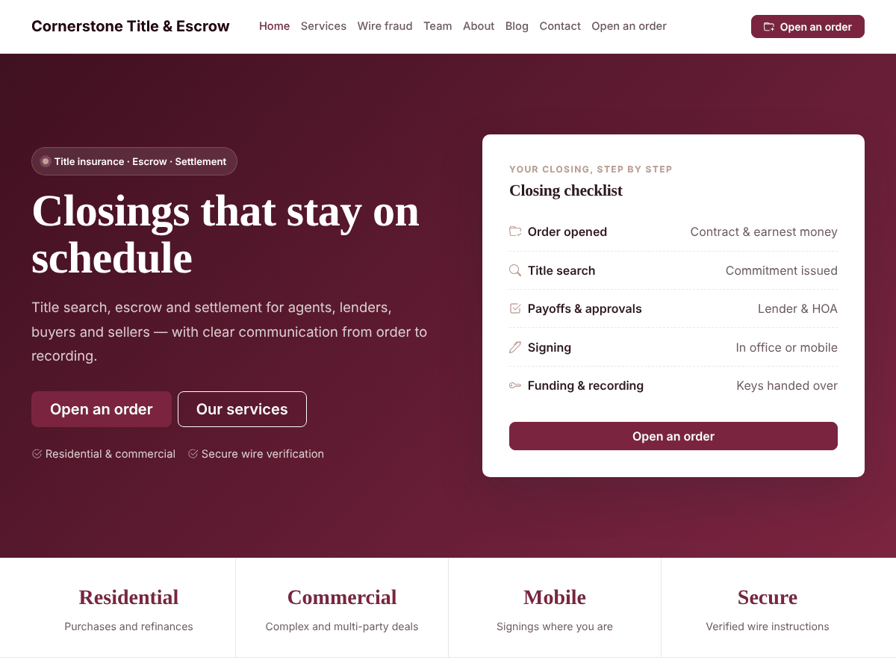
WiseBones Title & Escrow
Title, escrow and settlement company.
ProfessionalService · lead form: order
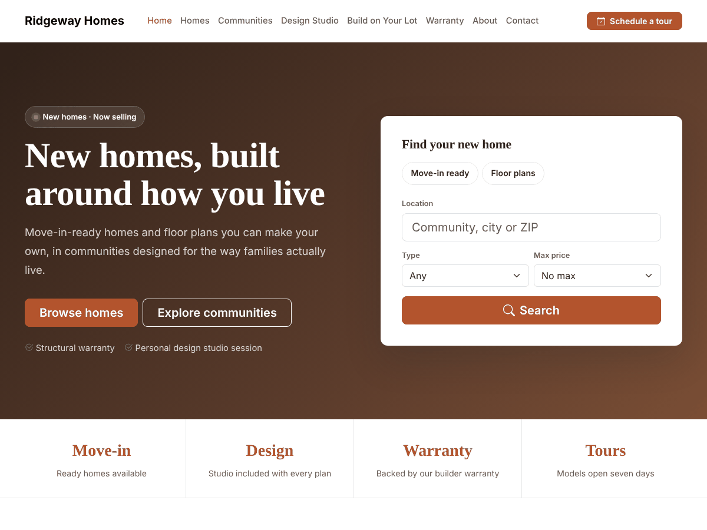
WiseBones Home Builder
New-home builder and community developer.
HomeAndConstructionBusiness · lead form: showing
Construction & trades
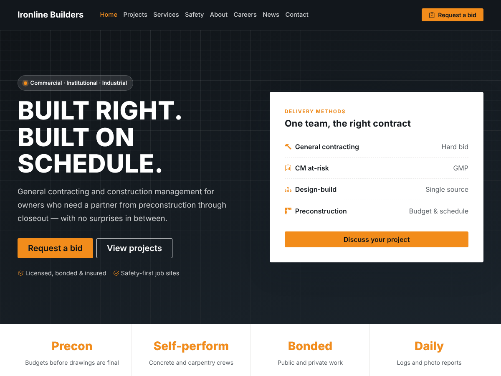
WiseBones General Contractor
General contractor and construction manager.
GeneralContractor · lead form: quote
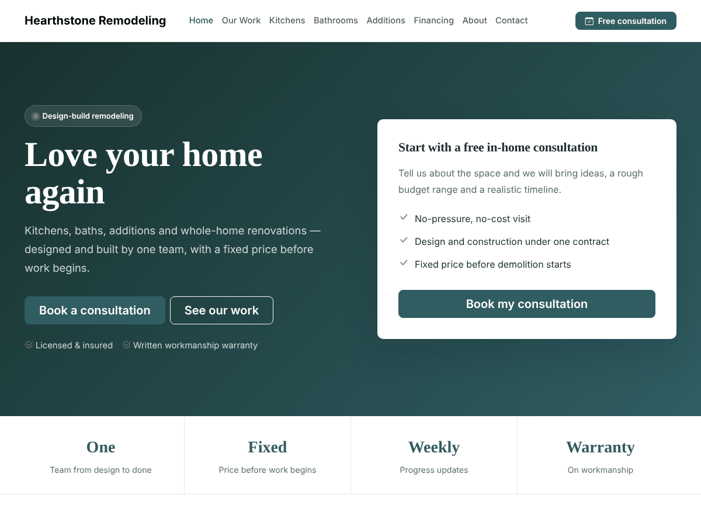
WiseBones Remodeling
Remodeling and design-build.
HomeAndConstructionBusiness · lead form: quote
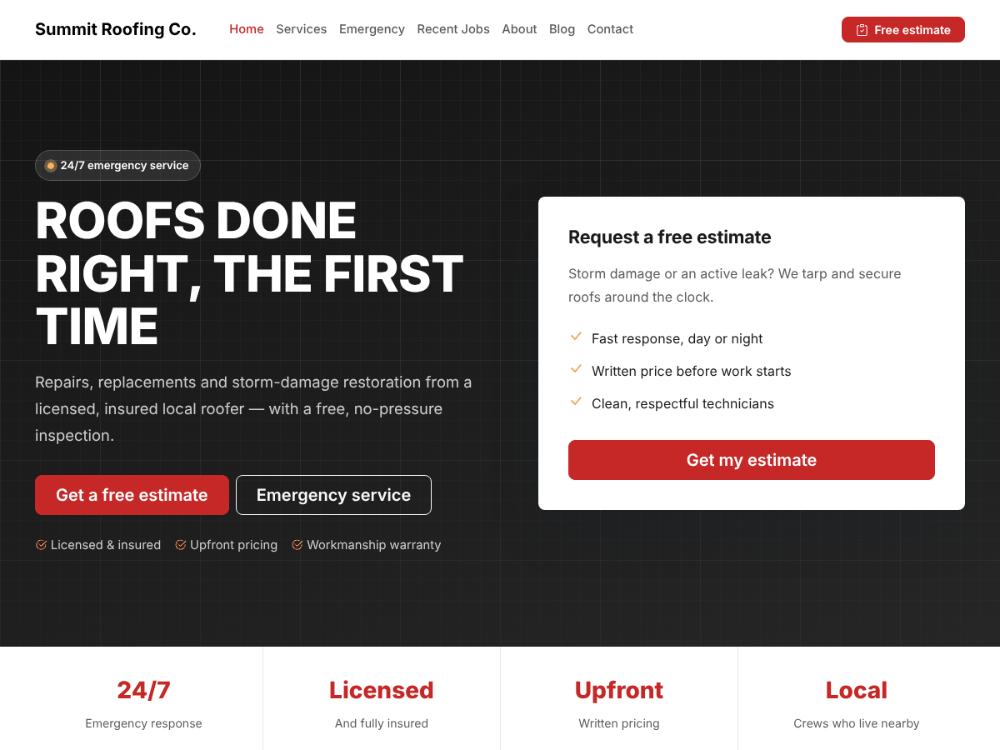
WiseBones Trades
Specialty trade contractor with presets for roofing, HVAC, plumbing and electrical.
RoofingContractor / HVACBusiness / Plumber / Electrician · lead form: quote
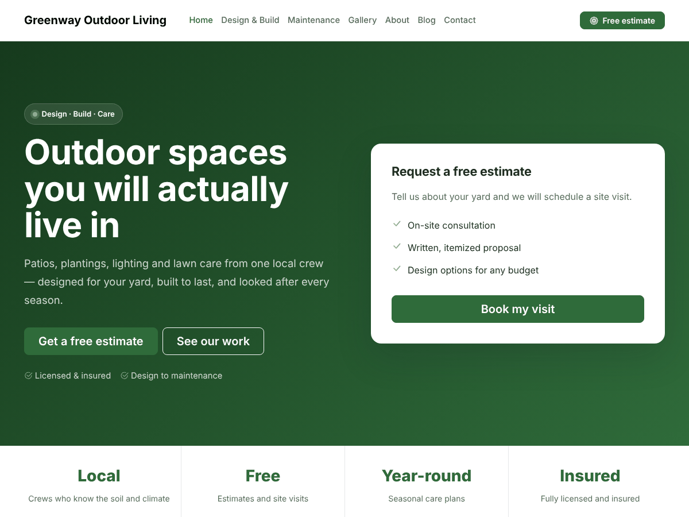
WiseBones Landscaping
Landscaping, hardscape and outdoor-living contractor.
HomeAndConstructionBusiness · lead form: quote
Design
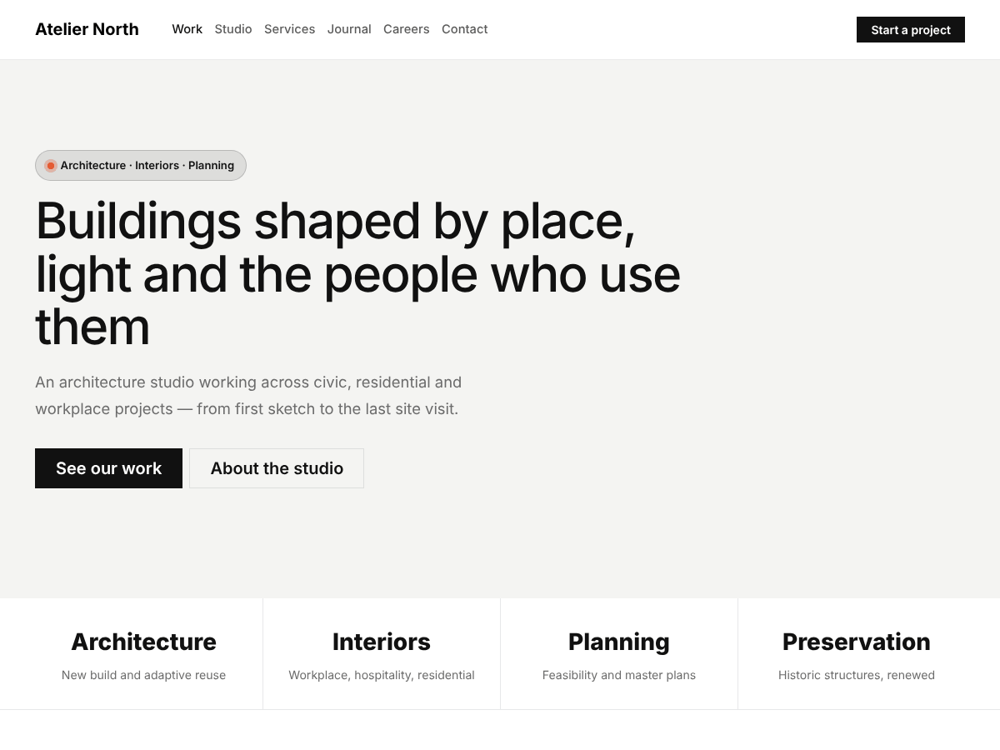
WiseBones Architecture
Architecture, engineering and design firm.
ProfessionalService · lead form: contact
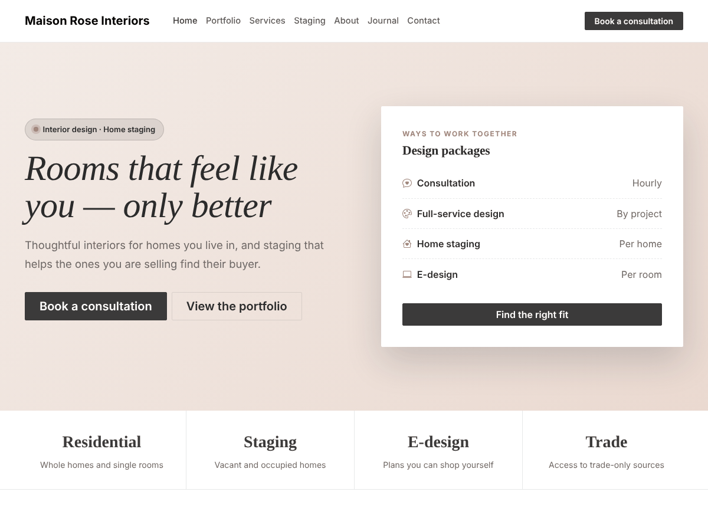
WiseBones Interiors
Interior design and home staging.
ProfessionalService · lead form: contact
How the industry themes work
- Sections.
hero,stats,services,featured(listings or projects),values,process,team,testimonials,areas,faq,content,postsandctalive inwpwisebones/template-parts/industry/. A child overrides one by copying the file to the same path. - Hero panels. Property search, quote request, mortgage payment calculator, or a key/value spec card.
- Owner controls. Customizer → WPWiseBones → Front Page Sections switches sections on and off and edits the phone number, hero photo, stats and closing call to action. Brand colours are defaults for the existing Brand Colours settings.
- Industry Kit. Listings, projects, services, team, testimonials and service areas (switched on per theme), seven lead forms stored under Leads and emailed to you, schema.org business markup, and Appearance → Starter Site.
- Trades presets. WiseBones Trades switches between roofing, HVAC, plumbing and electrical from the Customizer, changing copy, services, colour and schema type together.
Build installable zips with tools/build-library.sh. The full list, including the four
brand themes below, is in child-themes/library.json.
Brand themes
The four themes below predate the framework and keep their own front pages.
How the skins work
Each child theme is deliberately thin: a style.css header pointing at
Template: wpwisebones, a functions.php that enqueues one brand stylesheet after
the parent's, and a front-page.php that renders the marketing page with the parent's
get_header() and get_footer(). The brand colours are CSS custom properties
overriding Bootstrap's, so nothing in the parent has to be forked.
The parent handles the stylesheet order for you: Bootstrap, then the parent
style.css and main.css, then the child's style.css — the child
theme only has to enqueue its own brand CSS (all four do, at priority 20). This needs theme
1.0.13 or newer; earlier versions left the parent style.css out on a child theme site.
RealWise
Version 1.3.4 · text domain realwise · navy, royal blue and amber.
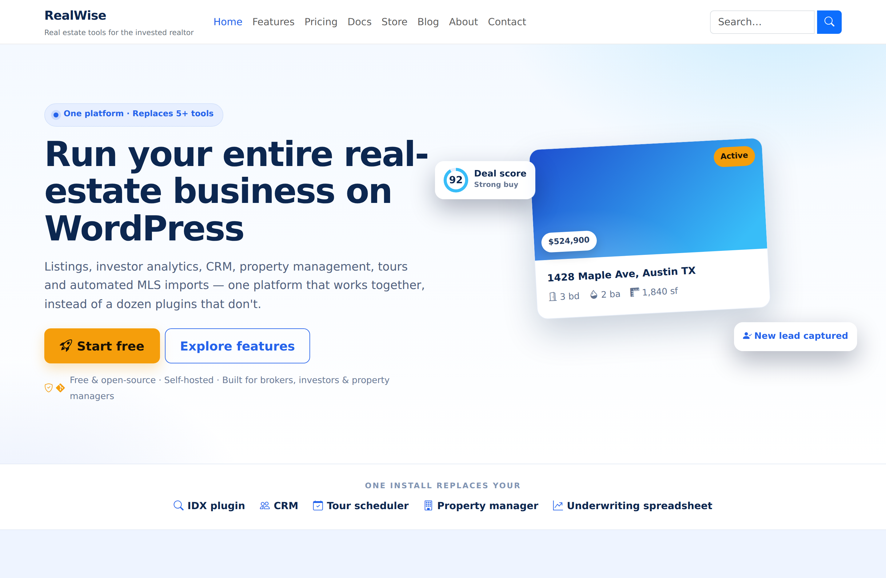
child-themes/realwise/front-page.php with the parent header and footer.
See the whole page.
The marketing page is self-contained — it needs neither the importer nor the shortcodes plugin — and covers a feature grid, workflow scenarios, pricing pillars and an FAQ. Easy Digital Downloads buy buttons appear automatically once the storefront exists.
Install
- Install and activate the WPWiseBones parent theme.
- Install and activate RealWise.
- Optionally add WiseBones Shortcodes (for
[wpb_*]blocks on the inner pages) and Easy Digital Downloads — plus EDD Software Licensing if you want license keys.
The demo importer
The importer runs automatically on first activation, and can be re-run from Appearance → RealWise Demo → Import. It is idempotent: pages and downloads are matched by a meta flag and updated in place rather than duplicated. It creates:
- Pages — Home, Features, Pricing, Docs, About, Contact on the RealWise Marketing full-bleed template, plus a Blog posts page and a sample post.
- Reading settings — Home as the static front page, Blog as the posts page.
- Menus — RealWise Primary and RealWise Footer, assigned to their theme locations.
- Theme mods — hero heading, sub-heading and a CTA pointing at Pricing.
- An EDD storefront when EDD is active — a free RealWise download and a paid RealWise MLS, with the bundled plugin zips copied into a protected uploads folder and attached.
The child theme also registers a [realwise_contact_form] shortcode and its own
Schema.org output for the marketing pages.
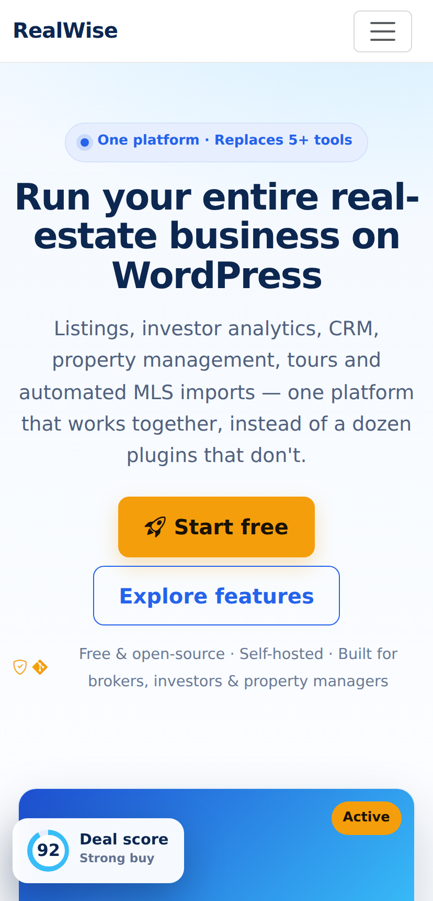
AEC Forge
Version 1.1.2 · text domain aec-forge · charcoal and molten orange.
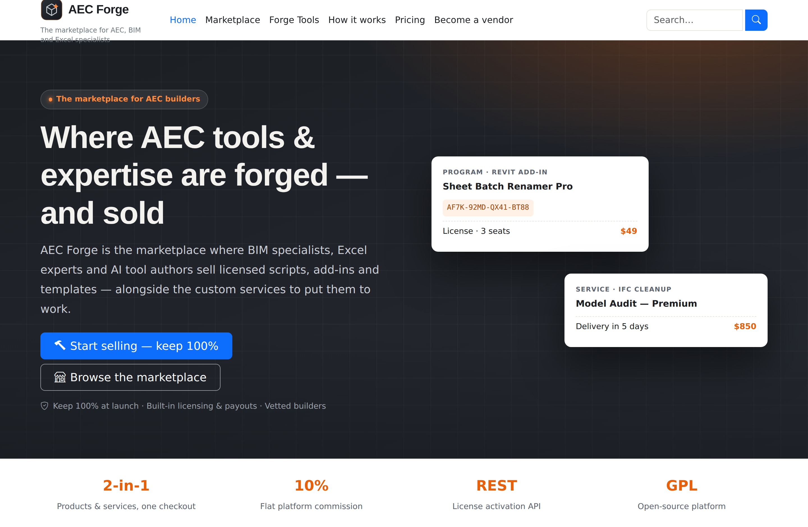
child-themes/aec-forge/front-page.php.
See the whole page.
AEC Forge promotes a multi-vendor marketplace where AEC/BIM specialists, Excel experts and AI tool authors sell licensed digital products and tiered services. The front page reads live data from the AEC Market and AEC Forge Tools plugins when they are active — the tool list, credit costs, featured vendors and product cards — and falls back to a representative static list when they are not, so the page always renders.
Install
- Install and activate WPWiseBones, then AEC Forge.
- Run Appearance → AEC Forge Setup → Build to create the promo pages (Home, How It Works, The Concept) and the menus.
- Add the AEC Market plugin for the live marketplace; WooCommerce product markup is themed through
woocommerce/content-product.php.
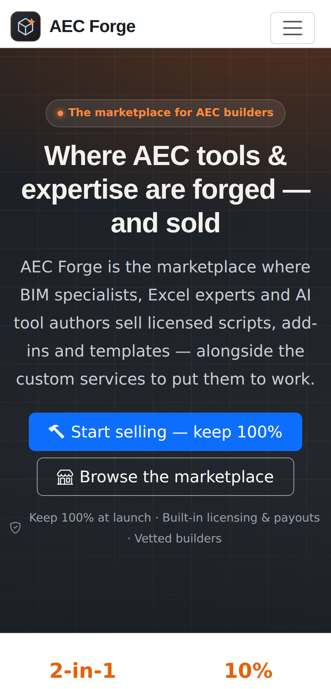
Antivig
Version 0.4.2 · text domain antivig-child · midnight navy and amber.
Requires WordPress 6.5 and PHP 8.1 — a higher floor than the parent's 6.0 / 7.4.
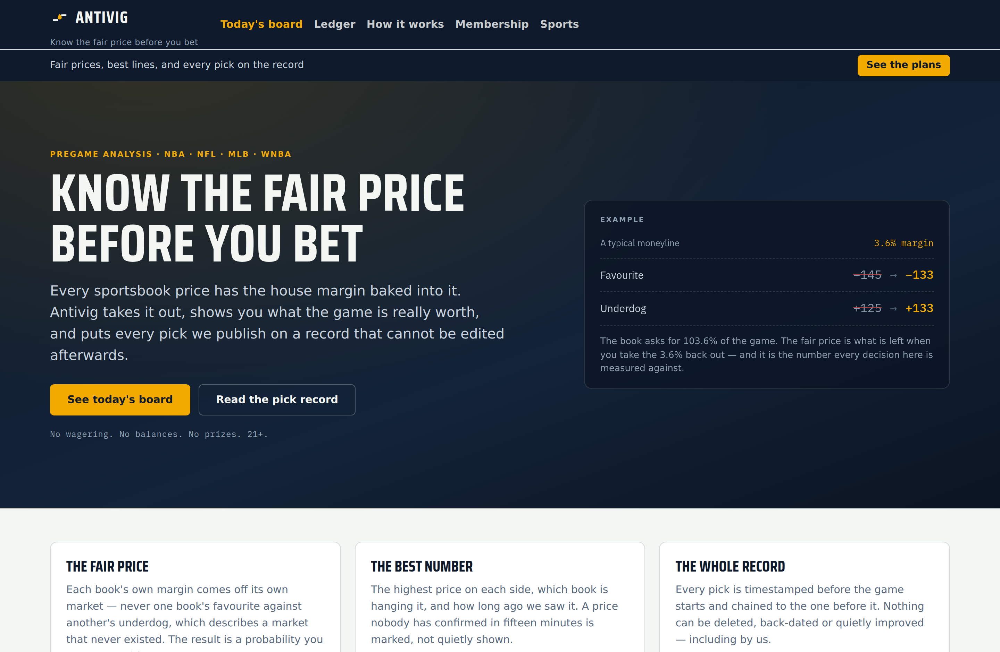
child-themes/antivig-child/front-page.php.
See the whole page.
Antivig is the brand layer for a paid sports-analysis membership, and deliberately nothing else —
the odds board, the pick ledger and the membership gate live in the antivig-engine and
antivig-membership plugins, so the site keeps working if the theme is swapped. The front
page renders with or without them: it shows the live board when the engine plugin is active and the
static argument for the product when it isn't.
What it adds on top of the parent
- Brand through the parent's own filters. Rather than restyling the chrome, it
filters
theme_mod_wpwisebones_header_styleto dark and supplies defaults for the parent's colour and layout mods — so the header, footer, buttons and hero gradient the parent prints come out branded, and any value the owner sets in the Customizer still wins. - Self-hosted webfonts — IBM Plex Sans, IBM Plex Mono and Saira Condensed as
.woff2inassets/fonts/, so the board typography needs no third-party request. - Installable web app —
inc/pwa.phpserves a manifest, a service worker and an offline page from the site root. - Three extra menu locations — member navigation, sports and a legal footer, added alongside the parent's four rather than replacing them.
- A
theme.jsonof its own and a board hero block pattern.
Install
- Install and activate WPWiseBones 1.0.13 or newer, then Antivig. 1.0.10 is the hard floor; on 1.0.10–1.0.12 the child corrects the stylesheet cascade itself.
- Add
antivig-membershipandantivig-enginefor the board, the ledger and the paywall. They are not part of this repository.
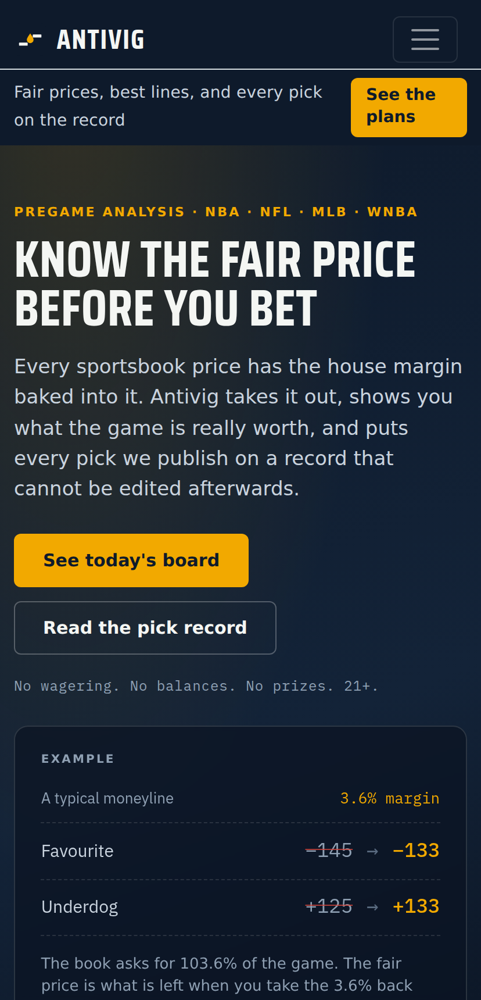
PHX After Dark
Version 1.1.1 · text domain phx-after-dark · a night palette on Bootstrap's
own dark mode. Requires WordPress 6.4 and PHP 8.1.
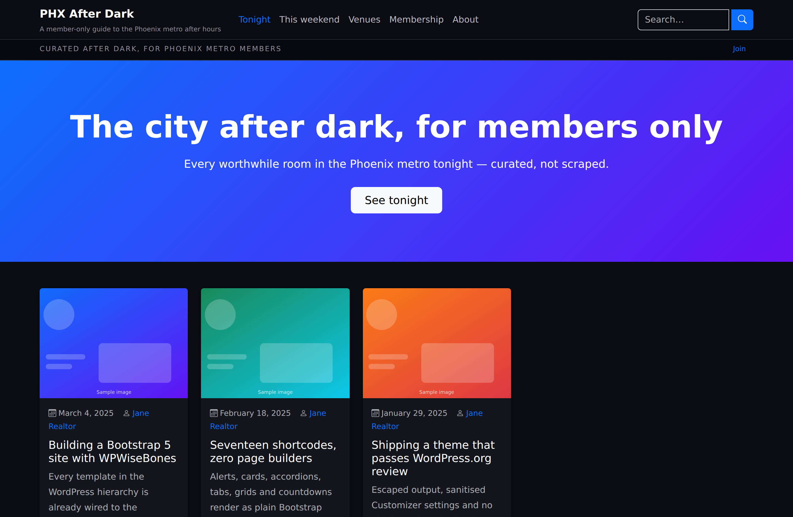
index.php with the skin active — this theme ships no templates
of its own. See the whole page.
PHX After Dark is the brand layer for a private, member-only event guide for the Phoenix metro. The
catalogue, the membership and every event template come from the phx-events-membership
plugin, which is not part of this repository — the theme supplies the palette, the chrome and the
patterns the pages are built from.
What it adds on top of the parent
- Bootstrap's own dark mode, rather than a fight with overrides. It appends
data-bs-theme="dark"to the<html>element through WordPress'slanguage_attributesfilter, then retints Bootstrap's variables fromstyle.css. Every Bootstrap component follows without being restyled one by one. - A dark header by filtering the parent's
theme_mod_wpwisebones_header_style, the same way Antivig does. - Two block patterns — a homepage hero and a membership call to action — under their own pattern category, since the pages are assembled in the editor rather than templated.
- Its own
theme.json, brand marks and favicon.
.text-dark on
post-card titles, which Bootstrap renders as dark text — unreadable once a child flips the colour
mode. It now uses .link-body-emphasis, which follows the mode and is unchanged in light.
Install
- Install and activate WPWiseBones 1.0.14 or newer, then PHX After Dark.
- Add the
phx-events-membershipplugin — without it the theme is brand only, with no event catalogue or membership.
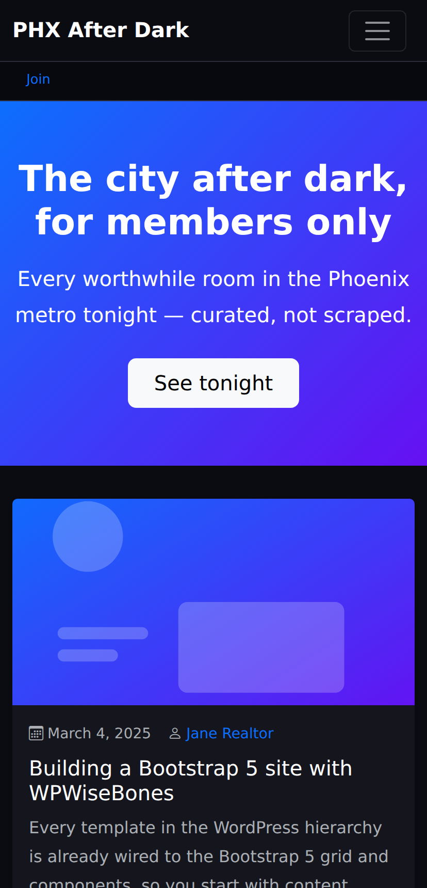
Rolling your own skin
Copy either child theme as a starting point. The pattern that keeps upgrades painless:
- Point
Template:atwpwisebonesinstyle.css. - Enqueue one brand stylesheet on
wp_enqueue_scriptsat a later priority than the parent's, and override Bootstrap's CSS custom properties (--bs-primaryand friends) rather than restyling components. - Version assets by
filemtime()— both child themes do this, so edits bust caches without a manual version bump. - Override single template parts from
template-parts/instead of whole templates.